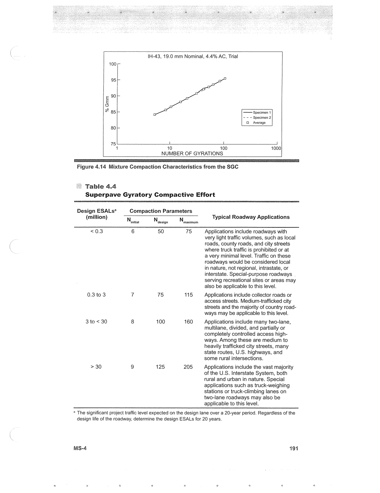

PDF page 225 · book page sequence 191


Searchable transcription
Unproofread OCR · 267 detected words; mean OCR confidence 90.81. Check technical values, symbols and table columns against the scan.
IH-43, 19.0 mm Nominal, 4.4% AC, Trial 100 -- 95-- E 90 }- & io) x 85i- Specimen 1 - — — Specimen 2 OQ Average 80; 75 L 1 J 4 10 100 1000 NUMBER OF GYRATIONS
Figure 4.14 Mixture Compaction Characteristics from the SGC
Table 4.4 Superpave Gyratory Compactive Effort
Design ESALs? Compaction Parameters (million) N N Typical Roadway Applications initial design maximum <0.3 6 50 75 Applications include roadways with
very light traffic volumes, such as local roads, county roads, and city streets where truck traffic is prohibited or at
a very minimal level. Traffic on these roadways would be considered local
in nature, not regional, intrastate, or interstate. Special-purpose roadways | serving recreational sites or areas may also be applicable to this level.
0.3 to 3 7 75 115 Applications include collector roads or access streets. Medium-trafficked city streets and the majority of country road- ways may be applicable to this level.
3 to < 30 8 100 160 Applications include many two-lane, multilane, divided, and partially or completely controlled access high- ways. Among these are medium to heavily trafficked city streets, many state routes, U.S. highways, and some rural intersections.
> 30 9 125 205 Applications include the vast majority of the U.S. Interstate System, both rural and urban in nature. Special applications such as truck-weighing stations or truck-climbing lanes on two-lane roadways may also be applicable to this level.
* The significant project traffic level expected on the design lane over a 20-year period. Regardless of the design life of the roadway, determine the design ESALs for 20 years.
MS-4 191